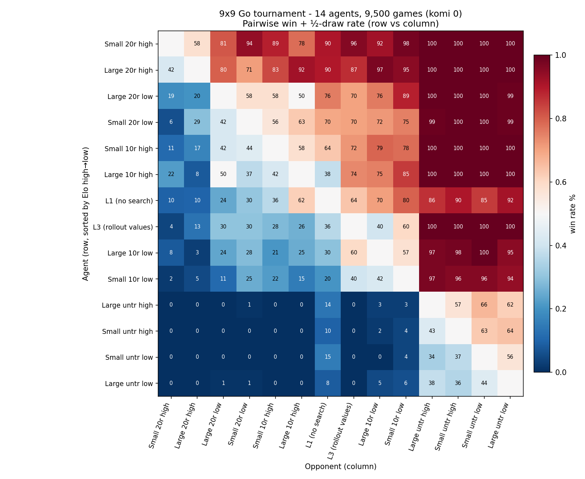
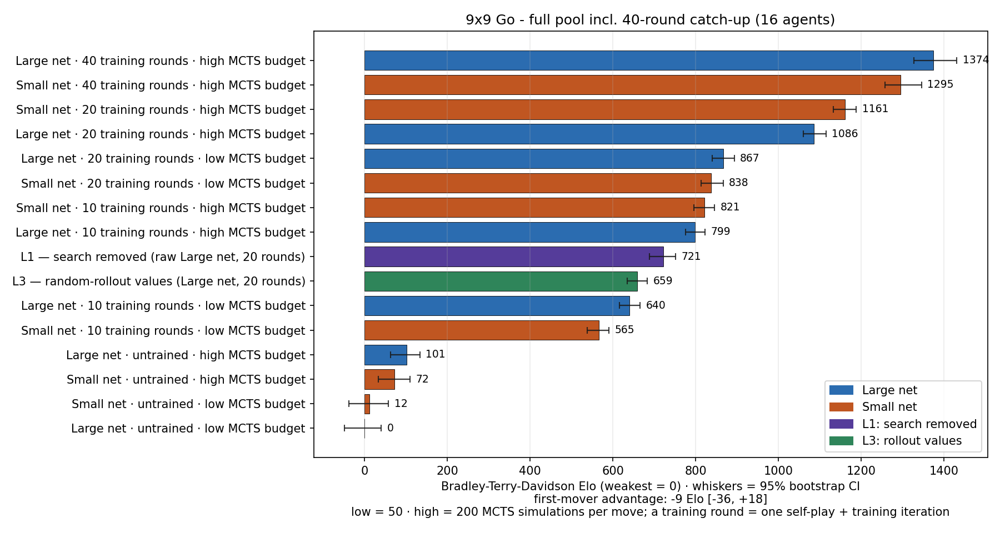
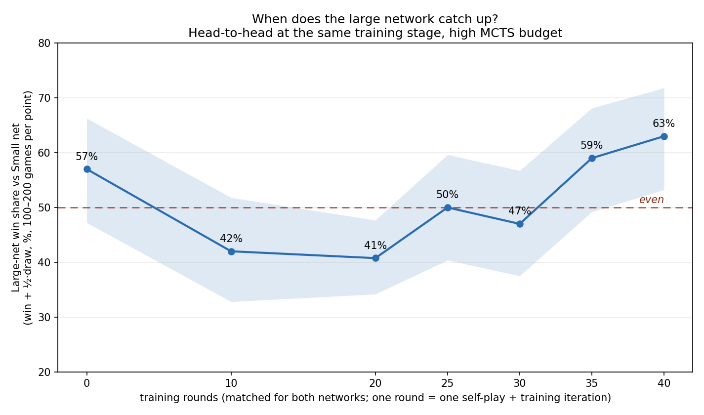
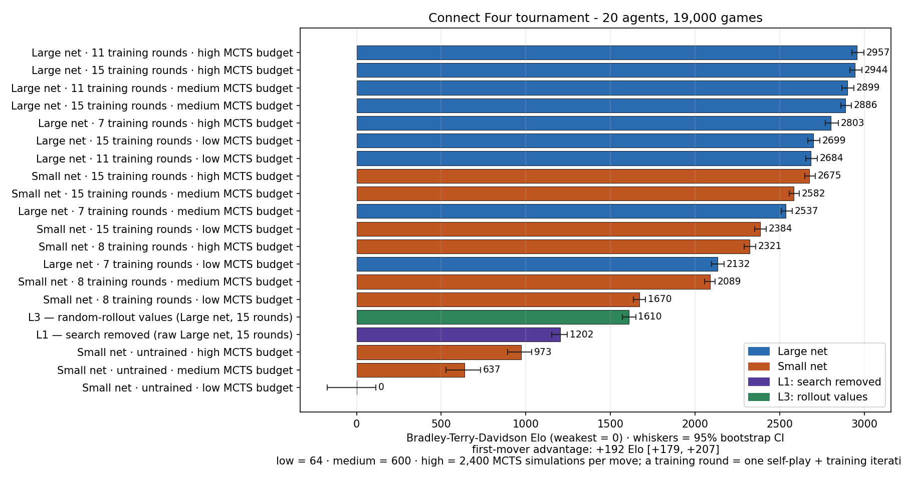

Inputs
17 binary planes
stones × 8 history + colour to move
A brief walkthrough of the algorithm and a small toy implementation — for a neuro-AI course presentation.
Below: how AlphaZero learns Go, chess, and shogi from nothing; what each component contributes; and what happened when we trained it ourselves — on Connect Four and on 9 × 9 Go.
01
Takeaway. AlphaZero is one neural network plus one search procedure, taught by self-play, that masters Go, chess, and shogi from scratch.
In 1997, IBM's Deep Blue defeated chess world champion Garry Kasparov. The frontier of human-vs-machine games moved east — to Go.
Go is a 4,000-year-old strategy game from China. The rules fit on a postcard, but the game is far harder to play well than chess. In a typical chess position, a player has about 35 legal moves to consider. In Go, it's around 250. Go has more legal board positions than there are atoms in the observable universe.
Brute force — the strategy that worked for chess — was hopeless. But the deeper problem was evaluation. In chess, a static rule like "queen worth 9, rook worth 5" gives a useful first guess at who is winning. In Go, no comparable rule exists. A position is good or bad based on patterns and influence and territory that strong players describe as "intuition" — and intuition has historically been the one thing machines couldn't fake.
Through the 1990s and 2000s, the best Go programs were stuck at the level of strong amateurs. Most experts thought it would take another decade before a computer could beat a top professional. Some thought it might never happen.
The first real progress came from a French researcher named Rémi Coulom. In 2006 he introduced Monte Carlo Tree Search to Go. Instead of trying to enumerate all positions, MCTS played out random games from the current position and used the win rates to estimate which moves were good. It was crude — but it was the first algorithm that didn't need expert evaluation rules to play decent Go. Programs jumped from amateur to strong amateur level within a few years.
The next leap came in 2014–2015, when researchers showed that convolutional neural networks — the same architectures used for image recognition — could be trained on millions of human Go games to predict expert moves. The policy networks were uncanny: they could suggest moves a strong amateur might play, with no handcrafted rules.
DeepMind combined these two ideas. AlphaGo used a CNN trained on 30 million human moves to bias an MCTS search, with an additional value network to estimate who was winning. In October 2015 it defeated Fan Hui, the European Go champion, 5–0 in an even match — the first time a computer had beaten a professional Go player on a level playing field.
But Fan Hui wasn't at the very top of the rankings. The next step would be to play one of the legends of the game.
The match was held in Seoul over five games, with a million-dollar prize. The opponent: Lee Sedol, an 18-time world champion regarded by many as the strongest player of his generation. The match was watched live by over 280 million people, most of the Korean public among them.
Game 1: AlphaGo won. The crowd was stunned, but the game looked like one a strong human might have lost; commentators thought Lee had underestimated his opponent.
Game 2 was different. On move 37, AlphaGo played a shoulder hit on the fifth line — a move so unusual that the live commentator initially thought it was a mistake. In four decades of professional Go, no top player had played that move in that position. Within twenty moves, it became clear the move was brilliant. AlphaGo won.
Game 3: AlphaGo won again. The series was 3–0 in a best-of-five.
Game 4: Lee, playing white, found a move of his own. Move 78 — described afterwards as a "divine move," the kind of inspired strike that wins championship games. AlphaGo's evaluation collapsed; the system began playing moves that even amateurs could see were errors. Lee won. It was the only game AlphaGo would lose to a top human player. Ever.
Game 5: AlphaGo won. Final score 4–1.
In interviews afterwards, Lee reflected: "AlphaGo's moves were not always the moves a human would play, but they were good." The DeepMind team — engineers, researchers, Demis Hassabis — were jubilant but visibly emotional. They had not been certain they would win.
In May 2017, AlphaGo played the (then) world number one, Ke Jie. 3–0. After the match, DeepMind retired AlphaGo from competitive play.
Then came the surprises. In October 2017, DeepMind published AlphaGo Zero. It dropped human games entirely. It dropped the handcrafted rollouts. A single neural network learning from scratch via self-play, guided by a simpler MCTS. In three days of training it surpassed the original AlphaGo. In forty days it reached strength beyond anything DeepMind had built before.
Two months later, in December 2017, came AlphaZero: the same algorithm — same hyperparameters, same loop — applied to chess, shogi, and Go. Within hours, AlphaZero was defeating Stockfish (the strongest chess engine), Elmo (the strongest shogi engine), and AlphaGo Zero at its own game.
The chess world reaction was one of disorientation. AlphaZero played a sacrificial, positional, intuition-heavy style that experienced grandmasters described as "alien" — beautiful, but unlike how computer engines had ever played. Magnus Carlsen would later say AlphaZero had taught him things about chess he had never considered. Garry Kasparov wrote that AlphaZero "approaches the game of chess in the same way that humans do."
In November 2019, Lee Sedol retired from professional Go. In a press conference he said: "Even if I become the number one, there is an entity that cannot be defeated."
That entity is the subject of this explainer.
02
Takeaway. Self-play makes data, training updates the network, the new network plays better — repeat. Each cycle is one iteration.
03
Takeaway. A neural network that looks at the board and gives back two things — its best guess for where to play, and its best guess for who's winning.
It's a convolutional neural network (ConvNet): the same family of network used for image recognition. A ConvNet slides small filters over a grid, looking for local patterns — corners, edges, textures in an image; eyes, threats, connected groups in a Go board. Stacked deep, it builds higher-level features from those local patterns.
AlphaZero uses a residual ConvNet (or "ResNet"): a deep ConvNet where each block adds its input back to its output. The skip connection lets gradients flow cleanly through dozens of layers, which is what makes deep networks trainable.
The board is fed to the network as a stack of binary grids. Each grid is the same size as the board — 9 × 9 for our Go variant — and each cell holds either a 0 or a 1.
AlphaGo Zero used 17 such grids per position, encoding:
Why the history? Because of the ko rule: in Go, you may not play a move that recreates an earlier board position. The network can't enforce that without seeing what the recent past looked like.
The shape 9 × 9 × 17 is specific to 9 × 9 Go. For 19 × 19 Go the planes are 19 × 19; for chess the planes encode pieces instead (one plane per piece type per colour, plus a few planes for castling rights, the move clock, and so on). The algorithm stays the same; only the input encoding is game-specific.
Our own implementation (§11) trims this to four planes — my stones, opponent stones, whose turn, and a bias plane, with no history stack. We can afford that because our rules engine masks illegal moves (including ko) before the policy is ever sampled, so the network doesn't have to learn legality from history planes. The trade-off: our network cannot condition on the recent past the way AlphaGo Zero's could.
The trunk's last layer feeds into two short "heads" that each produce a different kind of answer.
Policy head — a probability distribution over all 82 actions (81 board points + the pass action). It's saying: "Given this position, I'd estimate B4 is good with probability 0.35, E5 with 0.10, D3 with 0.02, …" The probabilities sum to 1 and reflect the network's intuition about good moves.
Value head — a single scalar between −1 and +1. It's saying: "From this position, I expect to …" +1 = "win for sure", −1 = "lose for sure", 0 = "even", +0.4 = "slightly winning". This is the network's intuition about who's ahead.
Two heads, but one shared body of layers. Features that help rank moves are largely the same features that help judge positions: a group with two eyes is alive matters for value and means there's no urgent move there for policy. Forcing both heads through the same trunk acts as an implicit regularizer; the AlphaGo Zero paper showed ablating it hurt strength.
04
Takeaway. The network alone can only guess. Search lets the agent test its guesses by simulating moves forward — and the network makes the search dramatically more efficient by telling it where to look and how to score what it finds.
MCTS is a way to explore the future of a game by simulating it. Starting from the current board, it builds a tree of possible continuations and uses the results of those simulations to decide which move is actually best right now.
The name "Monte Carlo" is historical: classical MCTS picks random move sequences from a position, plays them out to the end (a rollout), and uses the random win/lose outcomes to estimate which moves are good. The randomness — like the dice tables of the Monte Carlo casino — gives the algorithm its name.
AlphaZero drops the random rollouts. When the search reaches a position it hasn't seen, the value network reads the position directly and says "I think this is +0.4 — slightly winning." No coin-flipping. Much faster, much more accurate. The policy network is used too, to suggest where the search should look first.
Per move, AlphaZero runs ~600 of these simulations. Each one is the same four-step recipe:
Start at the root (current board). At each node, descend to the child that scores highest under Q + U — repeat until you hit a leaf (a node the search hasn't expanded yet).
The leaf isn't the end of the game, so we add one new child node for every legal move available there.
The expanded leaf is sent through the network. The network returns a value V (who's winning, in [−1, +1]) and a policy prior P (a probability for each child move).
Walk back up the path you came down. At each node on the path: add 1 to the visit count N, and update the running mean value Q with the new V.
The interesting phase is Select. At every node, the algorithm has to pick which child to descend into. AlphaZero uses a formula called PUCT (Predictor + UCT) that scores each child by adding a "winning so far" term Q to an "exploration bonus" U:
$$ a^* = \arg\max_a \big[\, Q(s,a) \,+\, U(s,a) \,\big], \qquad U(s,a) = c_\text{puct} \cdot P(s,a) \cdot \frac{\sqrt{\sum_b N(s,b)}}{1 + N(s,a)} $$
Reading the terms one at a time:
So U is big when the network said the move looked good (high P) but we haven't tried it much (low N). Q is big when we've tried the move and it worked. PUCT picks the child where Q + U is biggest — exploiting what's worked while occasionally trying the network's untested suggestions.
After all 600 simulations, the root has accumulated a visit count $N(s_0, a)$ for every legal move. The move distribution played by the agent is:
$$ \pi(a) \;\propto\; N(s_0, a)^{1/\tau} $$
where τ is a temperature (more on that in the next section). This π is the search-improved policy. Crucially, it is almost always better than the network's raw policy p, because the search has had a chance to look ahead and discard moves that looked good in p but turned out badly in simulation. That's why π — not p — is what the agent plays, and what the policy head is trained against.
Imagine the agent is about to make its very first move on an empty board. The network's policy head outputs probabilities — let's say it's slightly biased toward 3-3 and 4-4 corner points (the kinds of moves that tend to win, from training):
$P($corner 3-3$) = 0.15, \quad P($corner 4-4$) = 0.20, \quad P($centre tengen$) = 0.05, \quad …$
MCTS starts simulating. The first simulation can't use Q (nothing has Q yet — N is 0 everywhere), so PUCT reduces to "follow the network's prior." It picks 4-4. The search descends into 4-4, expands it, the network reads the resulting position and says V = +0.05 (slightly winning). That +0.05 is backed up. Now root's child 4-4 has $Q = 0.05$ and $N = 1$.
The next simulation re-scores all children. 4-4's exploration bonus dropped (because N is now 1). So PUCT might now pick 3-3 instead, expand it, get a value back, etc. Over 600 simulations, moves that consistently lead to high-value positions accumulate visits; moves that lead to losses get visited a few times and then ignored. The visit counts at the end are sharper and better-informed than the raw policy prior was.
05
Takeaway. The network plays games against itself. Every position is stored with the move distribution the search produced; when the game ends, every position is also stamped with who won. That's the training data.
This is the most natural question. The network is initialized randomly — its policy is uniform-ish noise, its value head outputs garbage. MCTS will run, but with a useless network it just stumbles around the tree. The first self-play games are basically random.
But notice what's still real: the final win/lose outcome z. When the game ends and the board is scored, somebody won. That fact does not depend on the network's beliefs at all. It is ground truth.
The network is then trained: "in this position you predicted $v = +0.1$, but the player to move actually lost ($z = -1$). Adjust." Repeated over many positions, this signal alone is enough to start shaping the value head. The network slowly learns that "my group has two eyes" correlates with winning, and that "my stones have no liberties" correlates with losing.
Once the value head is even slightly useful, MCTS becomes useful: it stops descending into obviously-losing positions. The search-improved distribution π is now meaningfully better than the raw policy p, so training p → π improves the policy. Better policy → better search → better π → better policy. The loop bootstraps from nothing.
The whole system is being trained on signals that it generated itself, with one external anchor: who won the game. That anchor is small, but it is non-negotiable, and over millions of games it is enough.
Before each move's MCTS, perturb the root prior:
$$ P_\text{root}(a) \;=\; (1-\varepsilon)\, P(a) \;+\; \varepsilon\, \eta_a, \quad \boldsymbol{\eta} \sim \mathrm{Dirichlet}(\alpha) $$
06
Takeaway. One loss with three terms. The value head learns to predict the outcome; the policy head learns to copy the search.
$$ L \;=\; (z - v)^2 \;-\; \boldsymbol{\pi}^{\!\top} \log \boldsymbol{p} \;+\; c\,\|\boldsymbol{\theta}\|^2 $$
p seeds the search; the search returns a better π; training p → π distils that improvement back. Next iteration's p is stronger, so the search built on it is stronger too. This is policy iteration in neural form.
07
Takeaway. Four pieces — outer loop, self-play game, MCTS search, training step — each fits on one screen. Click between tabs to read them as a connected whole.
# Outer loop — runs for N iterations network ← random_init() best ← network buffer ← empty() # replay buffer of (s, π, z) for iteration in 1..N: # 1. self-play with the current best network for g in 1..games_per_iter: examples ← play_self_play_game(best) buffer.extend(examples) # 2. train a candidate on the buffer candidate ← network.copy() for step in 1..train_steps: batch ← buffer.sample(batch_size) train_step(candidate, batch) → tab 4 # 3. evaluate: AGZ gates by 55% arena win-rate; AZ adopts unconditionally if arena(candidate, best) ≥ 0.55: best ← candidate network ← candidate
# One self-play game def play_self_play_game(network): state ← initial_state() examples ← [] move_num ← 0 while not state.terminal(): # run MCTS to get visit counts at this state N ← mcts_search(state, network) → tab 3 # temperature schedule: explore early, exploit late τ ← 1.0 if move_num < 30 else 0.0 π ← N^(1/τ) / sum(N^(1/τ)) # store the training example (outcome filled in later) examples.append((state, π, state.player)) # sample and play an action a ← sample(π) state ← state.play(a) move_num += 1 # game ended — stamp every example with z from that player's view winner ← state.score() for (s, π, player) in examples: z ← +1 if winner == player else −1 yield (s, π, z)
# MCTS search — the heart of AlphaZero def mcts_search(root_state, network): root ← Node(root_state) # root prior + Dirichlet noise for exploration p, v ← network(root_state) root.P ← (1−ε)·p + ε·dirichlet(α) root.expand() for _ in 1..num_simulations: # typically 600–800 node, path ← root, [root] # PHASE 1: SELECT — descend by PUCT until leaf while node.expanded(): a ← argmax_a [ node.Q[a] + c·node.P[a] · √(ΣN) / (1+node.N[a]) ] node = node.children[a] path.append(node) # PHASE 2 + 3: EXPAND + EVALUATE if not node.state.terminal(): p, v ← network(node.state) node.P ← p node.expand() else: v ← node.state.terminal_value() # PHASE 4: BACKUP — propagate v up the path for n in reverse(path): n.N += 1 n.W += v n.Q = n.W / n.N v = −v # flip sign every level (opponent's turn) return root.visit_counts()
# One training step on a minibatch from the buffer def train_step(network, batch): # batch contains (states, target_policies π, target_values z) states, π_target, z_target = batch # forward pass — network reads positions, predicts p and v p, v = network(states) # the AlphaZero loss has three terms value_loss = mean((z_target − v)²) # MSE on outcome policy_loss = −mean(sum(π_target · log(p))) # cross-entropy on visit distribution reg_loss = c · sum(θ² for θ in network.parameters()) loss = value_loss + policy_loss + reg_loss # standard backprop + SGD update loss.backward() optimizer.step() optimizer.zero_grad() return loss.item()
08
Takeaway. The 2018 AlphaZero paper drops three AGZ-specific tricks so the same algorithm works on chess and shogi. Otherwise identical.
| AlphaGo Zero (2017) | AlphaZero (2018) | |
|---|---|---|
| Data augmentation | 8 Go symmetries (rotate, reflect) | None — chess and shogi aren't symmetric |
| Best-network | Frozen until a candidate wins ≥55% arena | Continuously updated, no gate |
| Outcome | $z \in \{-1, +1\}$ | $z \in \{-1, 0, +1\}$ (draws matter in chess) |
| Hyperparameters | Tuned per game | Same set across chess, shogi, Go |
Everything else — network shape, loss, MCTS-with-prior, self-play — is unchanged.
Our project
What follows is our toy implementation. The algorithm above is AlphaZero as described in the paper. Below is what happened when we trained a small version of it ourselves and measured what each component was doing.
AlphaZero.jl v0.5.5 — Jonathan Laurent's open-source AlphaZero implementation in Julia. We use the in-tree Connect Four game module as our test bed.GameInterface we wrote ourselves (src/Go9.jl, ~500 lines of legal-move + ko + capture + scoring code; §11). Same algorithm, same pipeline, two very different games.The numbers and figures below are the actual measurements from this run. Where a particular lesion variant has not yet been measured, the chart marks it explicitly.
09
Takeaway. Real data from our 6-iteration Connect Four run. After one iteration the full AlphaZero player already beats classical MCTS ~62% of the time; after six iterations it wins 96.5% and the bare policy network (no MCTS) reaches 46%.
For each iteration's checkpoint, we played 256 games against a fixed classical opponent — a Monte Carlo Tree Search with 1000 random rollouts per move. The opponent never changes, so the curve below is the actual strength of our agent over training time.
Note on the y-axis: this first run plots win rate against a fixed external opponent (classical MCTS with 1000 rollouts) rather than Elo, because we had not yet configured per-iteration weight saving. Every later run did save its checkpoints — and §11 reports exactly the AlphaZero-paper-style Elo: round-robin tournaments between checkpoints, network sizes, search budgets and lesions, on both games, with confidence intervals.
The MCTS-rollouts opponent above is a strong baseline, but it is not optimal. To know how close to actual perfect play the agent gets, we benchmark it against the Pons solver — a famous open-source Connect Four solver that uses iterative deepening alpha-beta with a precomputed opening book, and which has been used as the de-facto perfect baseline for Connect Four AI research for nearly a decade.
One subtlety. Connect Four is a first-player win: if both sides play perfectly, white always wins. So the theoretical maximum win rate any agent can achieve against perfect play, over alternating-colour matches, is 50 % — winning all 50 as-white games and losing all 50 as-black games. The Pons opponent never makes a mistake, so as-black we lose every game; the only question is how well we play as-white.
10
Takeaway. All four lesions measured against the perfect Pons solver. Removing search costs 29 points (50 → 21). Replacing the value head with classical rollouts is worse than removing search entirely — it costs all 50 points (50 → 0). Smaller capacity costs only 5 points.
The classic AlphaZero ablation question is: how much of the agent's strength comes from each component? We can answer it by degrading the agent one piece at a time and measuring the cost. We use the same iter-10 baseline network throughout (the converged checkpoint from the training curve), and play 100 games per arena against two opponents: RandomPlayer (uniform-random moves) and the Pons perfect solver.
| # | Lesion | What it removes | Implementation |
|---|---|---|---|
| L1 | Policy-only | MCTS at inference | NetworkPlayer at τ = 0 (argmax of policy head, no search) |
| L2 | Sims sweep | Variable search budget | Baseline player with MCTS sims ∈ {2, 4, 16, 64, 256, 600} |
| L3 | No value head | Learned value | Custom hybrid MCTS oracle: keep network policy, replace V with classical MC rollout (game played out with random moves) |
| L4 | Small net | Network capacity | Retrain Connect Four from scratch with 2 blocks × 32 filters (93 k params, vs 1.67 M baseline) |
This is the chart that holds the news. Same network (iter 10) where applicable; same opponent (Pons); same 100-game sample size with alternating colours. The dashed red line at 50 % is the theoretical ceiling (Connect Four is a first-player win, so the best any agent can do over alternating colours is win all 50 as-white games and lose all 50 as-black games).
Each bar is normalized to the 50 % ceiling — the bar's full width represents the theoretical maximum.
Against a uniform-random opponent, all four variants (baseline, L1, L3, L4) win 100 / 100 games. Random is too weak to discriminate; you need a strong opponent like Pons to see the lesion costs. We mention the random-opponent number only to confirm that all variants are at least beating pure noise — the question is how they fare against perfect play.
The classic AlphaZero compute curve plots strength against the number of MCTS simulations per move. We ran our iter-6 network against the same 1000-rollout MCTS opponent from the training curve, varying the trained agent's own MCTS budget from 2 to 600 simulations.
For reference, the same iter-6 network with sims ≥ 4 beats RandomPlayer 100 % of the time (with sims = 2 it still wins 88 %; see results/sims_sweep.csv). Random play is too weak to differentiate the search budget once it's non-trivial.
The cleanest one-line summary: when you compare against perfect play, the lesions rank like this from most-damaging to least:
| Rank | Lesion | Win rate vs Pons | Cost from baseline |
|---|---|---|---|
| 1 | L3 — no value head (MC rollouts at leaves) | 0 % | −50 pp (complete collapse) |
| 2 | L1 — policy-only (no MCTS) | 21 % | −29 pp |
| 3 | L4 — small network | 45 % | −5 pp |
| — | Baseline | 50 % | (ceiling) |
11
Takeaway. Stage two: we wrote a 9 × 9 Go rule engine for AlphaZero.jl, trained two network sizes from scratch on one GPU, and ranked 14 agent variants in a 9,500-game tournament. Training depth dominates everything (≈ +1,000 Elo from iteration 0 to 20). The Connect Four lesion ordering replicates. And a two-act surprise: at iteration 20 the 2.2× smaller network leads the pool — until doubling the training flips the order back to the big net (the epilogue below).
AlphaZero.jl knows nothing about Go. Everything the framework needs — legal moves, captures, ko, scoring — lives in one file we wrote, src/Go9.jl (~500 lines), implementing the GameInterface contract:
| Large net | Small net | |
|---|---|---|
| Architecture | ResNet, 5 blocks × 64 filters | ResNet, 2 blocks × 32 filters |
| Parameters | 756 k | 336 k (2.2× smaller) |
| Self-play | 500 games / iteration · 200 MCTS sims / move · Dirichlet noise ε = 0.25, α = 0.15 | |
| Learning | Adam, lr 5·10⁻⁴ · L2 10⁻⁴ · replay buffer 100 k → 300 k samples | |
| Arena gate | 80 games / iteration, permissive −10 % threshold (early candidates keep flowing) | |
| Iterations trained | 40 (tournament pool froze at 20; the epilogue uses 40) | 40 (same) |
Both runs train on the same single GPU at roughly 45–60 min per iteration. Rule-engine sanity checks the framework can't do for us — ko handling, suicide masks, symmetry/policy consistency, scoring — are covered by scripts/test_go9_integration.jl and scripts/smoke_test_go.jl.
The factorial design crosses 2 network sizes × 3 training stages (iter 0 / 10 / 20) × 2 search budgets (50 / 200 sims), plus the two lesions from §10 applied to the strongest large net: L1 (raw policy, no MCTS) and L3 (MCTS whose leaf values come from random rollouts instead of the value head). All 91 pairs play 100 games with colours strictly alternated, plus a 400-game per-colour calibration set. Ratings come from a Bradley-Terry-Davidson model (draws allowed) with a global first-mover-advantage term, fit jointly on all 9,500 games; uncertainty from 400 bootstrap refits of the entire tournament.
results/tournament_go9_ranking_v2.csv). The two untrained-net agents sit ~1,000 Elo below their trained versions. The fitted first-mover advantage is +6 Elo [−46, +54] — indistinguishable from zero (see the colour note below). A matplotlib rendering of this chart lives at results/tournament_go9_ranking_v2.png; the full pairwise matrix follows as Fig. 8.
results/tournament_go9_heatmap_v2.png.)Two safeguards, one direct measurement. Design: within every 100-game pairing the colours strictly alternate — each agent plays exactly 50 games as first player and 50 as second — so no entry in the ranking ever compares agents at unequal colour exposure. Measurement: a separate 400-game calibration set recorded outcomes per colour; across it, the first player won 201 decided games and the second 198 (1 draw). Fitting a global first-mover term jointly on all 9,500 games gives +6 Elo [−46, +54] — indistinguishable from zero. This is itself informative: at komi 0, perfect 9×9 play is a first-player win (that is why real Go pays the second player 5.5–7.5 points of komi), so the absence of any measurable first-mover edge says our agents are still far from the regime where the first move can be converted reliably. If training is pushed further, this number should grow — and komi should be raised to ~7 before then.
The capacity surprise begged a question: is the large net too big for 9 × 9 Go, or merely under-fed at 500 self-play games per iteration? The Connect Four flip below suggested the latter. So we doubled the training — both nets from iteration 20 to 40 (≈33 GPU-hours) — and ran a focused per-colour benchmark: each iteration-40 net against the other, against its own iteration-20 self, and against the other's iteration-20 self. 100 games per pairing, colours alternated.
| Pairing | Result | Reading |
|---|---|---|
| Large 40 vs Small 40 | 63 : 37 | The order flips back. Joint-fit gap +79 Elo [+29, +135], P(stronger) = 1.00 |
| Large 40 vs Large 20 | 88 : 12 | ≈ +288 Elo — the big net was still climbing steeply |
| Small 40 vs Small 20 | 70 : 30 | +134 Elo [+89, +183] — half the large net's gain: the small net is nearing its ceiling |
| Large 40 vs Small 20 | 71 : 29 | clears the former champion decisively |
| Small 40 vs Large 20 | 77 : 23 | … though the small net also clears the old runner-up |
Refit jointly over all 10,000 Go games, the final ranking puts large net, iteration 40, at 1,374 Elo [1,328, 1,431], ahead of small net, iteration 40, at 1,295 [1,258, 1,346] — with the iteration-20 ordering (small first) preserved below them. The capacity story completes: at matched, modest data the small net wins; give the big net twice the data and it overtakes, while the small net's returns flatten. Capacity isn't wasted on 9 × 9 Go — it just has to be paid for in self-play games. (The first-mover advantage, refit on 500 more per-colour games, tightens to −9 Elo [−36, +18]: still zero. And in 500 games between trained agents there was not a single draw — consistent with draws being a weak-agent, move-cap artifact.)

results/tournament_go9_iter40_ranking_v2.png; per-pairing data: results/go9_catchup.csv.)And when, exactly, did it catch up? Every training round was checkpointed, so we can ask directly: matched-stage duels every five rounds (100 games each) trace the whole arc. Untrained, the two nets are statistically even. Through rounds 10–20 the small net leads — the large net wins only 41–42 % of games. At rounds 25–30 they are back to even (50 %, 47 %). By round 35 the large net is ahead (59 %), and by 40 clearly so (63 %). The crossover sits around rounds 25–30 — roughly 12,500–15,000 self-play games before the extra capacity started paying rent. The early dip is the most instructive part: in the low-data regime the extra parameters actively hurt before they help.

results/go9_crossover.csv plus matched pairings from the tournament, calibration and catch-up files.)For symmetry we ran the identical design back on Connect Four: 2 network sizes (1.67 M vs 93 k parameters) × 3 training stages × 3 search budgets {64, 600, 2,400 sims} + L1 + L3 — 20 agents, 190 pairs, 19,000 games, with per-colour outcomes recorded for 114 pairs. Full ranking and pairwise matrix: results/tournament_c4_ranking_v2.png, results/tournament_c4_heatmap_v2.png. Read next to the Go results, three things stand out:

results/tournament_c4_heatmap_v2.png.)12
Takeaway. AlphaZero's strength is relational — no single component is doing the work alone. The policy proposes, the value evaluates, the search amplifies both.
Intuition without deliberation is mediocre; deliberation without intuition is slow; AlphaZero shows what happens when the two are designed to teach each other.
R